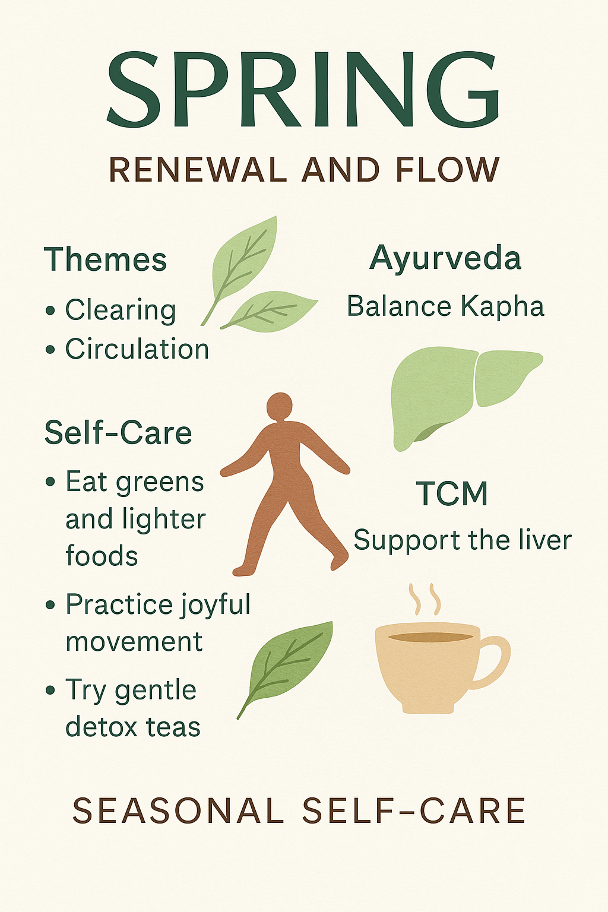
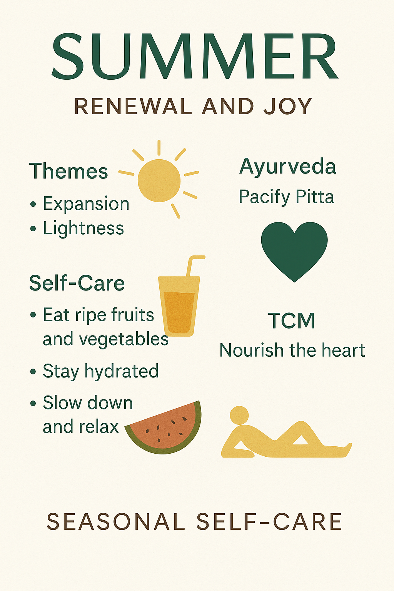
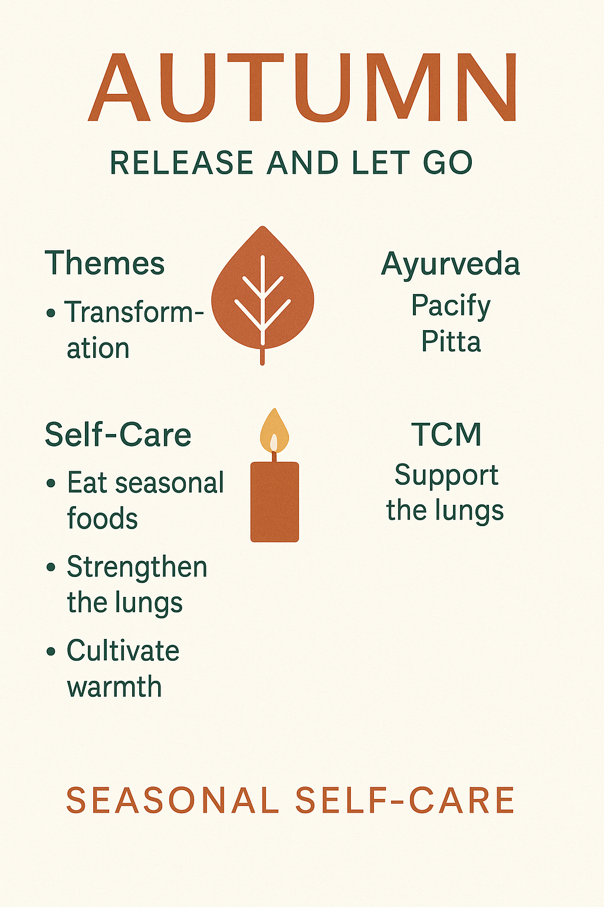
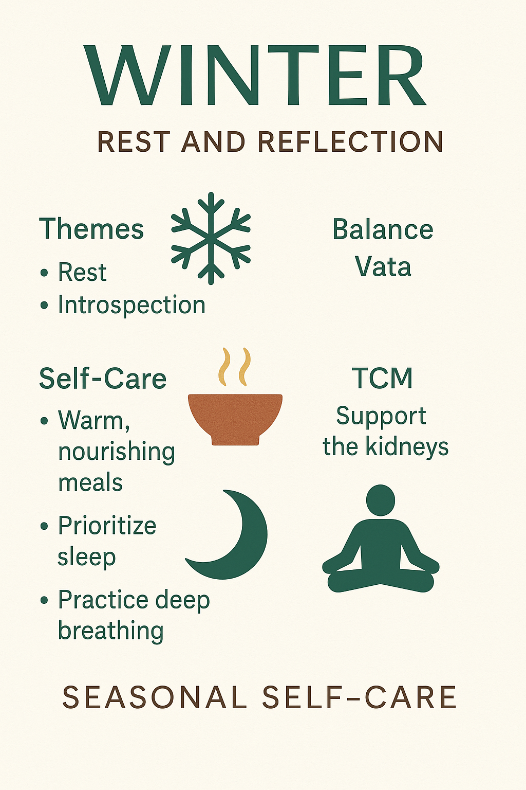

Your Second Spring: Embracing Perimenopause with Nature's Rhythm
Rooted in Nature
Our bodies are not separate from nature; they are part of it. Just as the earth moves through seasons of blooming, ripening, letting go, and resting, we too move through cycles.
Perimenopause is one of those cycles, a powerful shift often misunderstood as decline, when in truth it is another rhythm of life. Your own "Second Spring."
When we begin to align our wellness routines with the seasons, something remarkable happens. Instead of fighting our bodies, we start flowing with them. The foods we eat, the way we move, and even the rituals we choose can be tuned to the rhythms of spring, summer, autumn, and winter. And in that harmony, women often find greater ease, more energy, and greater clarity, even during hormonal changes.
Seasonal self-care isn't about perfection. It's about small, intentional choices that remind you: your body knows the way.
Spring: Renewal and Flow
Spring is nature's gentle reminder that life always finds a way to bloom again. After months of stillness, the air feels lighter, the days stretch longer, and everything around us whispers: start fresh.
For women in perimenopause, spring isn't just outside, it's inside too. This season often amplifies circulation, movement, and growth, but it can also stir up heaviness or sluggishness. Think of it like your body wanting to shake off the "winter coat," yet sometimes holding on a little too tightly. That's where seasonal self-care comes in.
In Ayurveda, spring is the season of Kapha, the dosha tied to earth and water. Too much Kapha shows up as fatigue, congestion, or even that foggy-headed feeling.
Traditional Chinese Medicine sees spring as the time of the liver, the organ of flow, energy, and emotional release. When your liver qi feels stuck, irritability and frustration rise to the surface (hello, mood swings).
So how do you bring yourself back into balance?
By leaning into what nature is already offering. Add more greens. Spinach, dandelion, sprouts...foods that feel alive and help your body "declutter." Move in ways that feel joyful rather than punishing: a walk under the blooming trees, a dance in your living room, yoga that opens the chest and hips. And because spring is about circulation, even five minutes of deep breathing can make a difference in how grounded you feel.
Inside the Second Spring approach, we encourage women to notice their recurring seasonal patterns. Maybe every spring your allergies flare, or your energy feels inconsistent. The app's personalized insights help you spot those rhythms early so you can prepare, whether that's with herbal teas, breathwork, or simply pacing your commitments so you don't overwhelm yourself when the world speeds up.
Spring self-care is really about renewal, not a dramatic reset, but small shifts that remind you: you're in sync with the world around you. Just as the earth wakes up, so can you.
Summer: Vitality and Expansion
Summer is nature at full volume. Long days, warm nights, colors bursting everywhere, it's the season of energy, expression, and growth. The world feels expansive, and often, so do we. But with all that brightness comes intensity, and for women in perimenopause, that intensity can sometimes tip into overwhelm.
Think about it: hot flashes feel hotter in July. Sleep can get disrupted when the nights are warm. And socially, summer often pulls us outward. More gatherings, more travel, more "yeses" on our calendar. It's no wonder many women find themselves running on overdrive when summer peaks.
In Ayurveda, summer belongs to Pitta, the dosha tied to fire and transformation. When balanced, Pitta gives us focus, drive, and a beautiful glow. When aggravated, it sparks irritability, skin inflammation, and, you guessed it! More heat in the body.
Traditional Chinese Medicine connects summer with the heart and small intestine, which means it's a time to nurture joy, relationships, and digestion. Too much summer fire, though, can leave us restless, overly emotional, or burned out.
The invitation here is to cool, soothe, and protect your energy. Swap heavy, spicy meals for refreshing foods. Think cucumber, watermelon, mint teas, and light salads. Hydrate like it's your job, not just for your body but for your mood. Build pauses into your day, even if it's just ten quiet minutes with your eyes closed. And when the sun pulls you outside, balance it with restorative moments: yoga that opens the chest without overheating you, evening walks when the air is softer, or a cooling breath practice that tells your nervous system, you're safe to slow down.
Second Spring's personalized insights lean into this balance by offering cooling recipes, guided meditations, and breathwork techniques designed to help women navigate the fiery side of summer
And because the app tracks patterns across time, it can show you if your sleep tends to dip every July or if irritability spikes with the heat, helping you anticipate the season instead of being blindsided by it.
Summer self-care is about shining, yes, but shining sustainably. When you honor your body's limits, you don't dim your light; you make sure it lasts.
Autumn: Transition and Grounding
Autumn is the season of change, the air sharpens, leaves let go, and the world begins its quiet descent into rest. For many women, this season mirrors the transitions happening within: shifting hormones, changing energy, and a natural pull toward reflection.
But change can feel unsettling. In perimenopause, dryness often worsens in autumn. The skin, hair, and even mood can feel brittle. Sleep might get choppier, and that familiar swirl of anxiety may pick up as the pace of life quickens before winter.
Ayurveda calls autumn the season of Vata, the dosha tied to air and space. When balanced, Vata is creativity, movement, and inspiration. When out of balance, it shows up as scattered thoughts, dryness, and unease.
Traditional Chinese Medicine links autumn to the lungs and large intestine, inviting us to focus on breath, immunity, and the art of letting go.
The medicine of autumn is grounding. Warm soups and roasted root vegetables bring stability to the body. Spices like ginger, cinnamon, and cardamom add warmth and comfort. Gentle routines, going to bed and waking up at consistent times, help calm the nervous system. Breathwork and journaling create space to process emotions and release what no longer serves.
In Second Spring, autumn becomes an opportunity to journal symptoms, track sleep patterns, and practice breathwork designed to strengthen the lungs and ease transitions
By noticing how your body responds each autumn, you can take preventive steps, like nourishing earlier, building stronger boundaries, and practicing mindfulness, so you're steadier through the season.
Autumn self-care is about preparing, grounding, and choosing what to carry forward. Just as the trees release their leaves, you get to release what no longer aligns, and that's powerful.
Winter: Rest and Deep Nourishment
Winter is the pause button nature presses each year. The days are shorter, the nights longer, and everything slows to a whisper. It's the season of stillness and deep restoration, a time when your body, too, is asking for more quiet and care.
For women in perimenopause, winter can sometimes intensify feelings of fatigue, low mood, or heaviness. Dryness, joint aches, or that urge to hibernate may feel stronger than ever. But when honored, winter's invitation is clear: conserve, replenish, and restore.
In Ayurveda, winter draws in both Vata (cold, dry air) and Kapha (heaviness, sluggishness). Together, they remind us to keep warmth and circulation alive.
In TCM, winter is tied to the kidneys, the seat of energy reserves. This is the season to nourish your body deeply so you carry strength into the new year.
Think hearty stews, mineral-rich broths, and warming herbal teas. Add oiling rituals—massaging warm sesame or almond oil into your skin—to keep dryness at bay and create a soothing bedtime ritual. Protect your sleep fiercely: long nights aren't a cue for guilt, they're nature's permission slip for rest. Gentle stretching or restorative yoga keeps your body supple without depleting energy.
Second Spring integrates this wisdom by offering seasonal recipes, meditations, and kidney-strengthening practices to help you build resilience
With its symptom tracking and AI insights, the app can even highlight patterns like dips in energy each January, helping you anticipate and buffer them with nourishing routines.
Winter self-care is about listening deeply. It's not a season to push harder but to gather strength, like seeds resting beneath the soil, quietly preparing to bloom again.
Your Seasonal Second Spring
When you care for yourself in rhythm with nature, you're not just easing symptoms, you're rewriting the story of perimenopause. You're choosing to see this chapter not as an ending, but as a seasonal journey filled with renewal, vitality, grounding, and deep nourishment.
Second Spring was created with this truth at its heart: that women deserve tools, community, and wisdom that honor the cycles within and around us. Whether it's a simple cup of cooling tea in summer, a grounding journal practice in autumn, or an early bedtime in winter, each choice becomes a thread that weaves resilience into your daily life.
Your Second Spring is not about doing more, but about being in tune with yourself, with the seasons, with the life you're living right now.
So, as you move forward, try one seasonal ritual this week. Notice how your body responds. Share your journey with women who are walking this path with you. Together, we're not just managing symptoms, we're embracing life's rhythms and rising, season after season, into our own renewal.